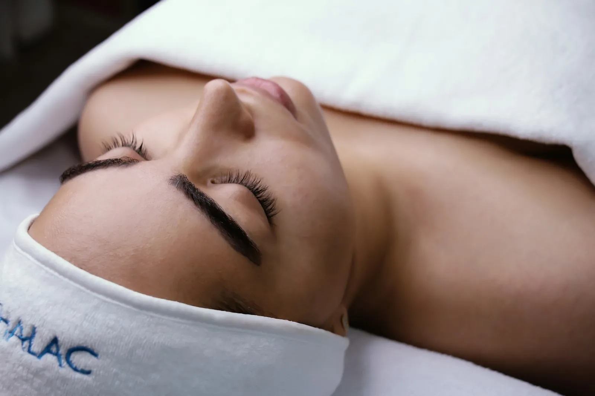

Beauty
Verzorgd tot in de details
Voor je gezicht, je handen en je voeten. Een vaste waarde voor wie graag verzorgd voor de dag komt.
- Gelaatsverzorging
- Handen en nagels
- Voetverzorging
- Ontharing